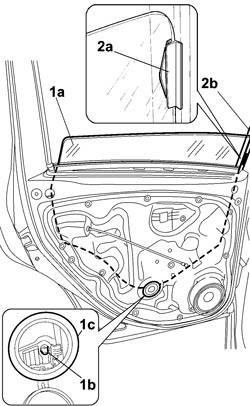

7010D14 REAR SIDE DOOR DESCENDING WINDOW GLASS (ONE), LEFT OR RIGHT - R.E. WITH DOOR PANEL (AND SUPPORT FRAME) REMOVED
- Path
- Procedures > 70 FITTINGS > 7010 PASSENGER COMPARTMENT REAR SIDE DOORS > 7010D REAR SIDE DOOR WINDOW GLASSES > 7010D14 REAR SIDE DOOR DESCENDING WINDOW GLASS (ONE), LEFT OR RIGHT - R.E. WITH DOOR PANEL (AND SUPPORT FRAME) REMOVED
- Kind
- repair procedure (removal / refitting; the operation number is the code)
- Applies to
- all engines; all production periods
- Interactive page
- https://sloeber94.github.io/elrnDB-fCrm/en/#/194000912
Applies to: all engines; all production periods
 Removing
Removing
 Refitting
RefittingOp. 7010D30 REAR SIDE DESCENDING WINDOW GLASS SCRAPER (INNER) R R
Op. 7010D26 REAR SIDE DESCENDING WINDOW GLASS SCRAPER (OUTER) (ONE), LEFT OR RIGHT - R.R
Op. 7010M21 REAR SIDE DOOR ELECTRICALLY-OPERATED WINDOW, LEFT OR RIGHT - R.R.
1. Release the window (1a) from the retaining clip (1b) accessible via the inspection opening (1c).
2. Release the fastening element (2a) from the window channel (2b) and support the actual window until it is removed.

Applies to: all engines; all production periods
Op. 7010A09 REAR SIDE DOOR INTERIOR SUPPORT FRAME - R.R.
- Carefully remove the window from its housing and rest it on a suitable support protected to avoid damaging the actual window.
Applies to: all engines; all production periods
Refitting
Removing- Check that the window is not damaged.
- Place the window in position.
- Insert the fastening element in the window channel and support the window appropriately.
Op. 7010A09 REAR SIDE DOOR INTERIOR SUPPORT FRAME - R.R.
- Secure the window to the window opening mechanism retaining clip.
Op. 7010M21 REAR SIDE DOOR ELECTRICALLY-OPERATED WINDOW, LEFT OR RIGHT - R.R.
Op. 7010D26 REAR SIDE DESCENDING WINDOW GLASS SCRAPER (OUTER) (ONE), LEFT OR RIGHT - R.R
Op. 7010D30 REAR SIDE DESCENDING WINDOW GLASS SCRAPER (INNER) R R
- Check that the window slides freely without any impediments by opening and closing it several times.
Topics linked from this page (4)
- 7010A09 REAR SIDE DOOR INTERIOR SUPPORT FRAME - R.R.
- 7010D26 REAR SIDE DESCENDING WINDOW GLASS SCRAPER (OUTER) (ONE), LEFT OR RIGHT - R.R
- 7010D30 REAR SIDE DESCENDING WINDOW GLASS SCRAPER (INNER) R R
- 7010M21 REAR SIDE DOOR ELECTRICALLY-OPERATED WINDOW, LEFT OR RIGHT - R.R.